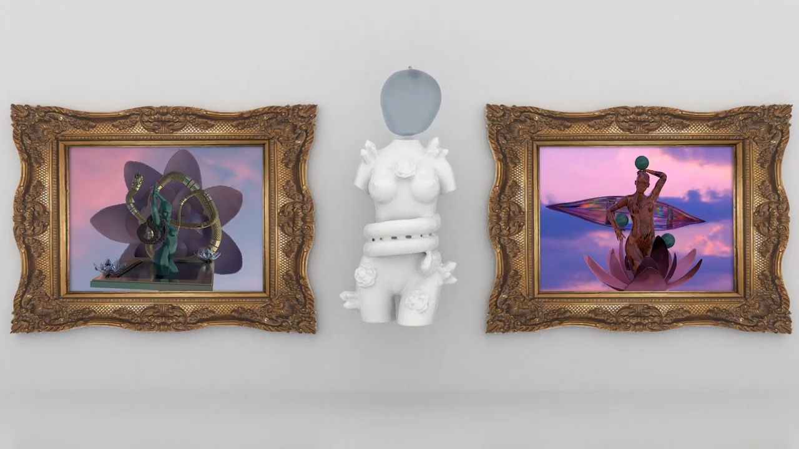

Perception
May 2020 | 3D Animation | Autodesk Maya
An experiment with Maya's bifrost fluids to create distorted representation of a woman’s body. By warping the woman’s form I gave back some of the freedom of how it would be viewed without the male gaze. I drew inspiration from older video works such as Dara Birnbaum’s Technology/Transformation: Wonder Woman and Martha Rosler’s Semiotics of the Kitchen.
May 2020 | 3D Animation | Autodesk Maya
An experiment with Maya's bifrost fluids to create distorted representation of a woman’s body. By warping the woman’s form I gave back some of the freedom of how it would be viewed without the male gaze. I drew inspiration from older video works such as Dara Birnbaum’s Technology/Transformation: Wonder Woman and Martha Rosler’s Semiotics of the Kitchen.